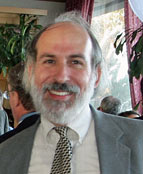

|
| |
|
| Moderator and Speaker Biographies |
|
Deborah L. Bleviss is the Acting Director of the Energy, Resources and Environment Program and has served as a Professorial Lecturer at Johns University’s School of Advanced International Studies (SAIS) since 1993. She has worked in the energy and environmental field for more than 30 years. From 2002 through June 2009, she worked as an independent consultant in energy efficiency, renewable energy and sustainable urban transportation. Ms. Bleviss was also a partner in the BBG Group, a small consulting firm focusing on sustainable transportation.
Previously, Ms. Bleviss worked first as an advisor to and then as program director of the Inter-American Development Bank’s Sustainable Markets for Sustainable Energy (SMSE) program. Prior to her work at the IDB, she worked at the U.S. Department of Energy as an advisor to the Assistant Secretary of Energy for Energy Efficiency and Renewable Energy, developing international and domestic clean transportation and energy financing initiatives. She was also a founder and the first director of the International Institute for Energy Conservation.
Ms. Bleviss was a lead author for the transportation mitigation chapter of the Second Assessment Report of the Intergovernmental Panel on Climate Change (1995) and the author of the book, The New Oil Crisis and Fuel Economy Technologies: Preparing the Light Transportation Industry for the 1990s (1988). In addition to her work at SAIS, she has served as an Adjunct Professor at Columbia University’s School of International and Public Affairs.
Trained as a physicist, Ms. Bleviss received her education from the University of California, Los Angeles, and Princeton University. |
|
|
Jeffrey Genzer is a partner at the firm of Duncan, Weinberg, Genzer and Pembroke, P.C., where he has practiced since 1985. Mr. Genzer practices energy, utility and environmental law. He also serves as counsel to a number of national associations, including the National Association of State Energy Officials (NASEO), the National Association of Energy Service Companies, the National Energy Assistance Directors’ Association, the Energy Programs Consortium, the Solar Energy Industries Association, the Solar Alliance, and the Geothermal Energy Association. Mr. Genzer has been counsel to NASEO since its formation in 1986. He has worked on energy data issues and energy emergency preparedness and response. Prior to entering private law practice in 1985, Mr. Genzer was the staff counsel and energy lobbyist for the National Governors’ Association.
Mr. Genzer’s practice involves work before federal and state legislative bodies and administrative agencies, including state public service commissions and the Federal Energy Regulatory Commission, as well as the U.S. Department of Energy and the U.S. Environmental Protection Agency. He has worked on electric and natural gas ratemaking, energy project development, energy efficiency projects, bulk power supply, transmission system issues (including ISOs and RTOs), contract negotiation, franchise issues, renewable energy projects and energy efficiency programs.
Mr. Genzer is a graduate of Haverford College and the Washington College of Law of the American University. He resides in Silver Spring, Maryland, with his wife. He has four children. |
|
|
Hannah Choi Granade is a Principal in McKinsey & Company’s Stamford office. She is a leader in McKinsey’s Energy and Materials practice focusing on issues of strategy, regulation, and climate change, as well as a leader in the Clean Technology practice. Mrs. Granade has served energy and materials, industrial, and aerospace and defense companies extensively on strategy, growth, regulation, and climate change topics. Additionally, she serves financial services and private investment firms on energy and climate-related investment issues, in part through her work leading the modeling efforts of the Electric Power Natural Gas Practice to examine U.S. power industry evolution and its impacts. Mrs. Granade is a principal author of the recent McKinsey report, Unlocking Energy Efficiency in the U.S. Economy.
She received an A.B. cum laude from Harvard College. | |
|  |
Steven Nadel is the Executive Director of the American Council for an Energy-Efficient Economy (ACEEE), a non-profit research organization that works on programs and policies to advance energy-efficient technologies and services. Mr. Nadel has been at ACEEE for 20 years serving as Deputy Director of the organization and Director of ACEEE’s Utilities and Buildings programs prior to his promotion to Executive Director in 2001. Prior to ACEEE he planned and evaluated energy efficiency programs for New England Electric, a major electric utility; directed energy programs for the Massachusetts Audubon Society, Massachusetts’ largest environmental organization; and ran energy programs for a community organization working on housing rehabilitation in the poorest neighborhoods of New Haven, Connecticut. Mr. Nadel has worked in the energy efficiency field for 30 years and has over 100 publications on energy-efficiency subjects. He has testified before Congress on energy efficiency subjects 10 times and also testified before multiple state legislatures. His current research interests include utility-sector energy efficiency programs and policies, state and federal energy and climate change policy, and appliance and equipment efficiency standards.
Mr. Nadel has an M.S. in Energy Management from the New York Institute of Technology, and a M.A. in Environmental Studies and B.A. in Government from Wesleyan University in Connecticut. |
|
|
Steven Wade is an economist in EIA’s Office of Integrated Analysis and Forecasting specializing in buildings energy demand. Recently, Dr. Wade focused on developing and maintaining projections of distributed electricity generation resources in buildings. Other interests include energy efficiency analysis, projection performance and developing highly detailed databases of buildings projection information in Excel. Prior to joining EIA, he was with the U.S. Postal Service for nine years, specializing in rate design and costing issues, productivity analysis and financial forecasting. Before that, Dr. Wade was an associate economist at Brookhaven National Laboratory specializing in energy demand modeling.
Dr. Wade has a Ph.D. in economics from the University of Arizona. | |
| |
|